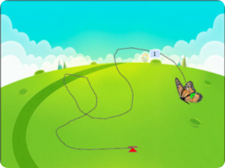
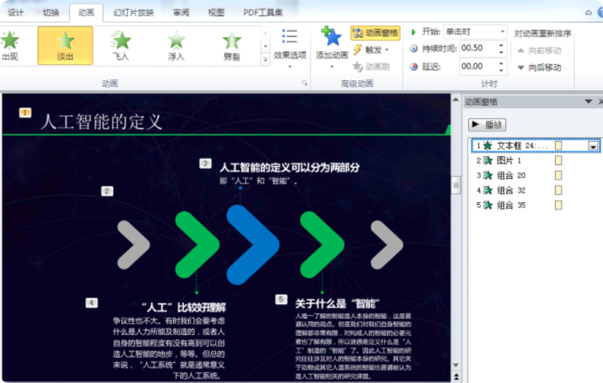
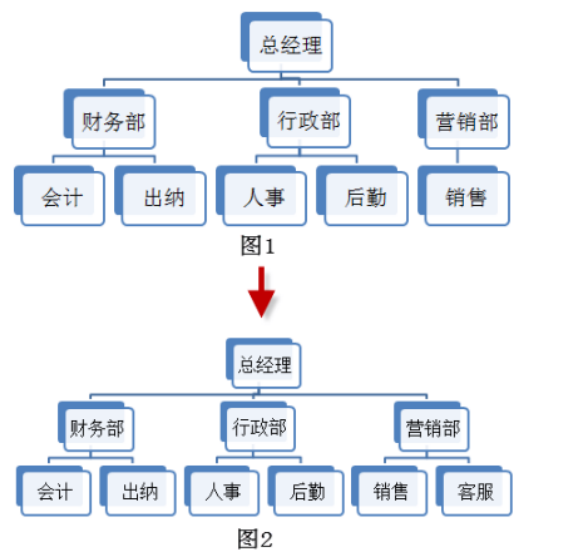
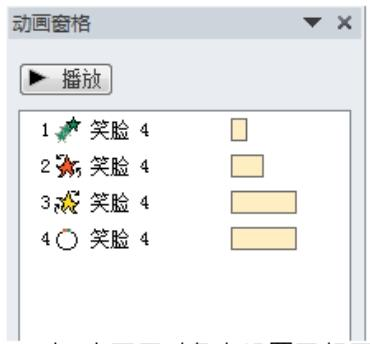
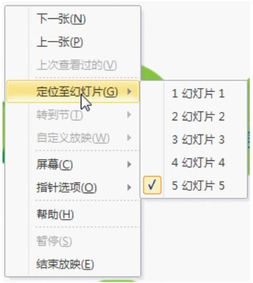
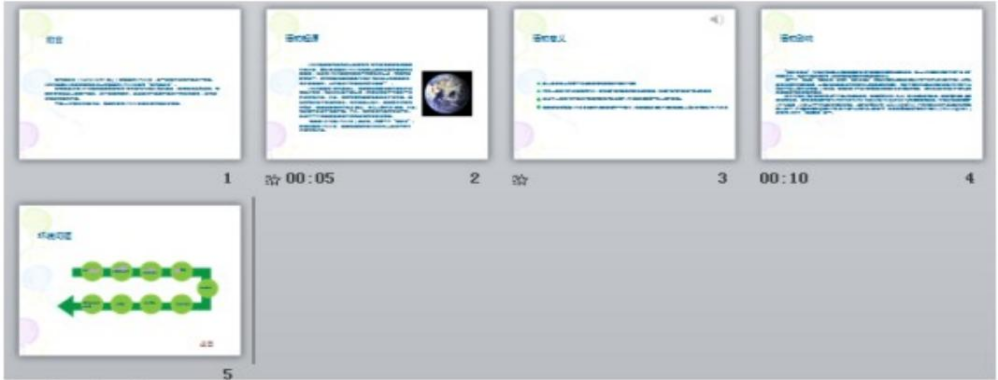
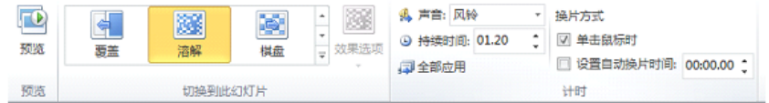
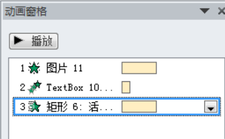
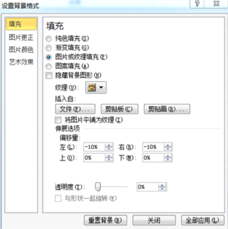

PPT选择练习
返回主页当前：第1题 / 共25题
2. 在PowerPoint幻灯片中播放背景音乐，在“音频工具—播放”中设置“开始”为“跨幻灯片播放”，音乐将会（）。
答题解析
3. 如图所示是某张幻灯片中的动画效果设置，下列说法错误的是（）。
答题解析
4. 在PowerPoint2010中，某张幻灯片的制作界面如图所示，可以看出对“蝴蝶”设置了（）动画效果。

答题解析
5. 在PowerPoint2010演示文稿中，关于下图所示的设置，描述正确的是（）。
答题解析
6. 在PowerPoint2010中编辑幻灯片时，点击“”命令按钮不能完成的操作是（）。
答题解析
7. 在PowerPoint2010中，要给某一对象同时设置两个动画效果，可以在设置完第1个动画效果后，通过（）来添加第2个动画效果。
答题解析
11. 在PowerPoint2010中，某张幻灯片的动画设置如图所示，下列叙述错误的是（）。

答题解析
12. 在PowerPoint2010中，使用SmartArt图形来绘制公司的组织架构，想要在图1中的“营销部”增加一个“客服”，效果如图2所示，可以在“营销部”上单击鼠标右键，在弹出的快捷菜单中，选择“添加形状”下的“（）”，并编辑文字“客服”。

答题解析
13. 在PowerPoint2010中，单击将会（）。
答题解析
15. 要在PowerPoint2010中插入如下图所示的对象，可执行的操作是（）。
答题解析
17. 在PowerPoint2010中，若要将左图变成右图的效果，可以通过"图片工具-格式"选项卡下的（）功能来实现。
答题解析
18. 下图为PowerPoint2010演示文稿中设置对象动画时的动画窗格，下列说法正确的是（）。

答题解析
19. 在PowerPoint2010中编辑幻灯片时，点击“  ”命令按钮不能完成的操作是（）。
”命令按钮不能完成的操作是（）。
”命令按钮不能完成的操作是（）。答题解析
20. 在幻灯片放映的过程中，鼠标右键点击放映页面时出现如下快捷菜单，下列说法错误的是（）。

答题解析
21. 在PowerPoint中，如下图所示，第（）张幻灯片设置了自动换片。

答题解析
22. 在PowerPoint2010中，制作演示文稿的部分界面如下图所示，下列说法正确的是（）。
答题解析
23. 如图所示，如需从第一张幻灯片开始放映演示文稿可以按下键盘上的（）键。
答题解析
24. 在PowerPoint中，如下图所示，第（）张幻灯片没有设置自动换片。
答题解析
25. 如图所示，给幻灯片中的图片设置动画效果，此图片一共设置了（）个动画效果。
答题解析
26. 如图所示，下列关于该幻灯片切换的说法正确的是（）。

答题解析
27. 要插入下图所示的标注“请看这里”，可以执行“插入”选项卡中“形状”命令下的（）。
答题解析
28. 在PowerPoint2010演示文稿中设置某对象的动画时，下列说法错误的是（）。
答题解析
29. 幻灯片的动画效果设置如图所示，下列说法错误的是（）。

答题解析
30. 在PowerPoint2010中，下列对象可以用来建立建立超链接的是（）。
答题解析
31. 如图所示，在PowerPoint2010中对某张幻灯片背景进行填充设置，此时单击“关闭”按钮，将会（）。

答题解析
32. 如图所示，如需从当前选中的幻灯片开始放映演示文稿可以按下键盘上的（）键。
答题解析
闯关完成！答题统计
总答题数：0题
答对题数：0题
正确率：0%